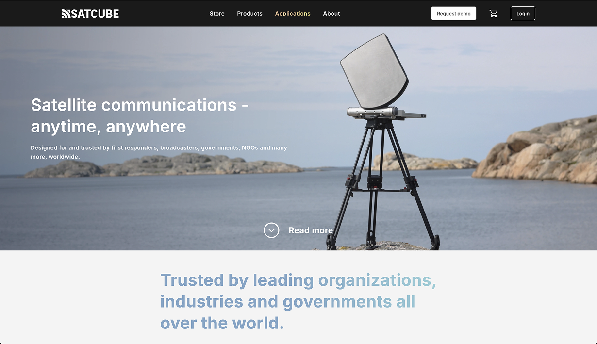
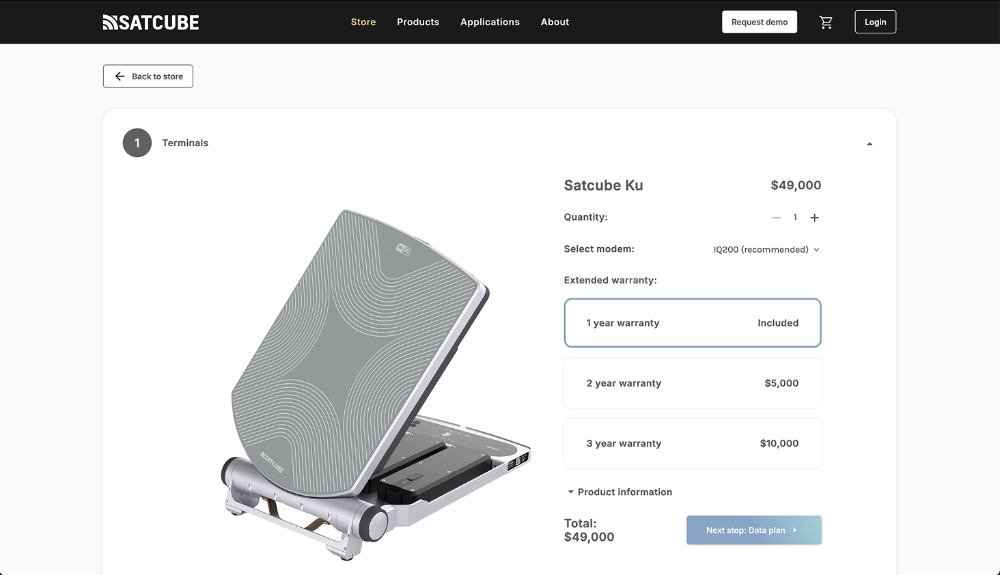
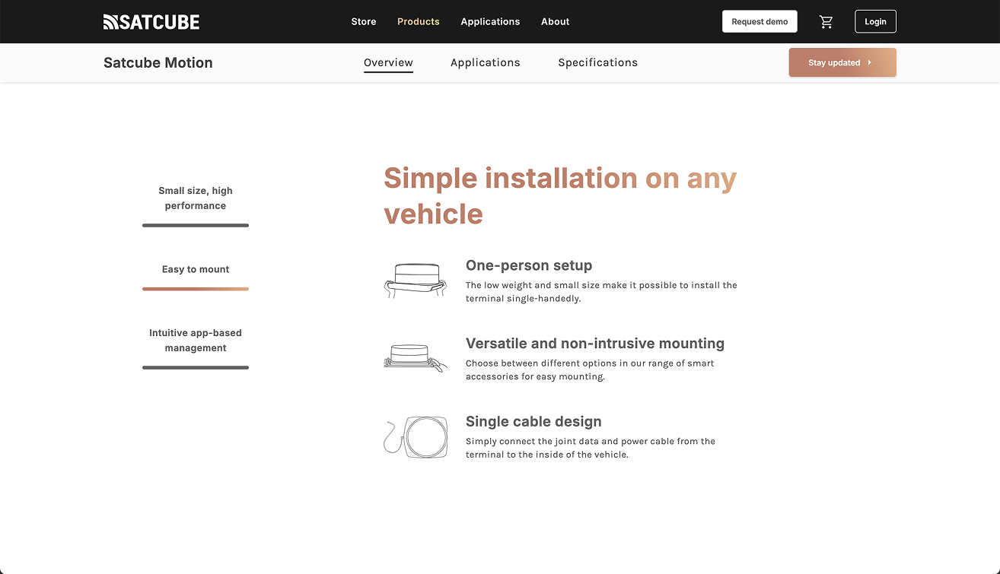

03 · Web · Satcube
Company news, a web shop and a product dashboard living under one roof, held together by a design system I built from scratch.

The live Satcube site: store, applications and company pages all share one navigation and one visual language.
The site is really several products in one package: company news and information, a web shop, and a dashboard where customers manage and monitor their terminals.
Each of those has very different jobs to do, and very different requirements. The challenge was letting them all feel like one brand while serving wildly different use cases.
A design system isn't a deliverable you finish. It's a living thing.
I set up the design system from scratch, starting with research, low-fidelity prototyping, then testing and designing, building components as I went.
It's never “done”. The team updates it regularly as new needs appear and to keep the aesthetic sharp and current. That's the point: a shared, evolving toolkit that keeps the site coherent.


Interviews with internal and external users, distilled into personas that guided every subsequent design decision.
A range of low- to high-fidelity prototypes in Figma, so ideas could be felt before they were built.
Watching people use prototypes, then talking it through, to surface the real pain points and ideas for improvement.
Comparing versions of a feature or layout to see which is clearer and more intuitive in practice.
Beyond the pixels, I own the roadmap for the website, deciding what gets built and in what order, balancing customer needs, business goals and team capacity, then designing it well. I track KPIs continuously to measure performance and find the next thing worth improving. Wearing both hats keeps strategy and craft honest with each other.